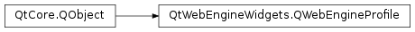

QWebEngineProfile¶
Synopsis¶
Functions¶
- def
cachePath() - def
clearAllVisitedLinks() - def
clearHttpCache() - def
clearVisitedLinks(urls) - def
cookieStore() - def
httpAcceptLanguage() - def
httpCacheMaximumSize() - def
httpCacheType() - def
httpUserAgent() - def
installUrlSchemeHandler(scheme, arg__2) - def
isOffTheRecord() - def
isSpellCheckEnabled() - def
persistentCookiesPolicy() - def
persistentStoragePath() - def
removeAllUrlSchemeHandlers() - def
removeUrlScheme(scheme) - def
removeUrlSchemeHandler(arg__1) - def
scripts() - def
setCachePath(path) - def
setHttpAcceptLanguage(httpAcceptLanguage) - def
setHttpCacheMaximumSize(maxSize) - def
setHttpCacheType(arg__1) - def
setHttpUserAgent(userAgent) - def
setPersistentCookiesPolicy(arg__1) - def
setPersistentStoragePath(path) - def
setRequestInterceptor(interceptor) - def
setSpellCheckEnabled(enabled) - def
setSpellCheckLanguages(languages) - def
settings() - def
spellCheckLanguages() - def
storageName() - def
urlSchemeHandler(arg__1) - def
visitedLinksContainsUrl(url)
Signals¶
- def
downloadRequested(download)
Static functions¶
- def
defaultProfile()
Detailed Description¶
The
PySide2.QtWebEngineWidgets.QWebEngineProfileclass provides a web engine profile shared by multiple pages.A web engine profile contains settings, scripts, persistent cookie policy, and the list of visited links shared by all web engine pages that belong to the profile.
All pages that belong to the profile share a common
PySide2.QtWebEngineWidgets.QWebEngineSettingsinstance, which can be accessed with thePySide2.QtWebEngineWidgets.QWebEngineProfile.settings()method. Likewise, thePySide2.QtWebEngineWidgets.QWebEngineProfile.scripts()method provides access to a commonPySide2.QtWebEngineWidgets.QWebEngineScriptCollectioninstance.Information about visited links is stored together with persistent cookies and other persistent data in a storage returned by
PySide2.QtWebEngineWidgets.QWebEngineProfile.persistentStoragePath(). The cache can be cleared of links byPySide2.QtWebEngineWidgets.QWebEngineProfile.clearVisitedLinks()orPySide2.QtWebEngineWidgets.QWebEngineProfile.clearAllVisitedLinks().QWebEngineProfile.PersistentCookiesPolicydescribes whether session and persistent cookies are saved to and restored from memory or disk.Profiles can be used to isolate pages from each other. A typical use case is a dedicated off-the-record profile for a private browsing mode. Using
PySide2.QtWebEngineWidgets.QWebEngineProfile.QWebEngineProfile()without defining a storage name constructs a new off-the-record profile that leaves no record on the local machine, and has no persistent data or cache. ThePySide2.QtWebEngineWidgets.QWebEngineProfile.isOffTheRecord()method can be used to check whether a profile is off-the-record.The default profile can be accessed by
PySide2.QtWebEngineWidgets.QWebEngineProfile.defaultProfile(). It is a built-in profile that all web pages not specifically created with another profile belong to.Implementing the
PySide2.QtWebEngineCore.QWebEngineUrlRequestInterceptorinterface and registering the interceptor on a profile byPySide2.QtWebEngineWidgets.QWebEngineProfile.setRequestInterceptor()enables intercepting, blocking, and modifying URL requests (PySide2.QtWebEngineCore.QWebEngineUrlRequestInfo) before they reach the networking stack of Chromium.A
PySide2.QtWebEngineCore.QWebEngineUrlSchemeHandlercan be registered for a profile byPySide2.QtWebEngineWidgets.QWebEngineProfile.installUrlSchemeHandler()to add support for custom URL schemes. Requests for the scheme are then issued toQWebEngineUrlSchemeHandler.requestStarted()asPySide2.QtWebEngineCore.QWebEngineUrlRequestJobobjects.Spellchecking HTML form fields can be enabled per profile by using the
PySide2.QtWebEngineWidgets.QWebEngineProfile.setSpellCheckEnabled()method and the current languages used for spellchecking can be set by using thePySide2.QtWebEngineWidgets.QWebEngineProfile.setSpellCheckLanguages()method.
-
class
PySide2.QtWebEngineWidgets.QWebEngineProfile([parent=Q_NULLPTR])¶ -
class
PySide2.QtWebEngineWidgets.QWebEngineProfile(name[, parent=Q_NULLPTR]) Parameters: - name – unicode
- parent –
PySide2.QtCore.QObject
Constructs a new off-the-record profile with the parent
parent.An off-the-record profile leaves no record on the local machine, and has no persistent data or cache. Thus, the HTTP cache can only be in memory and the cookies can only be non-persistent. Trying to change these settings will have no effect.
Constructs a new profile with the storage name
storageNameand parentparent.The storage name must be unique.
A disk-based
PySide2.QtWebEngineWidgets.QWebEngineProfileshould be destroyed on or before application exit, otherwise the cache and persistent data may not be fully flushed to disk.
-
PySide2.QtWebEngineWidgets.QWebEngineProfile.HttpCacheType¶ This enum describes the HTTP cache type:
Constant Description QWebEngineProfile.MemoryHttpCache Use an in-memory cache. This is the default if off-the-recordis set.QWebEngineProfile.DiskHttpCache Use a disk cache. This is the default if the profile is not off-the-record. If set on anoff-the-recordprofile will instead setMemoryHttpCache.QWebEngineProfile.NoCache Disable both in-memory and disk caching. (Added in Qt 5.7)
-
PySide2.QtWebEngineWidgets.QWebEngineProfile.PersistentCookiesPolicy¶ This enum describes policy for cookie persistency:
Constant Description QWebEngineProfile.NoPersistentCookies Both session and persistent cookies are stored in memory. This is the only setting possible if off-the-recordis set or no persistent data path is available.QWebEngineProfile.AllowPersistentCookies Cookies marked persistent are saved to and restored from disk, whereas session cookies are only stored to disk for crash recovery. This is the default setting. QWebEngineProfile.ForcePersistentCookies Both session and persistent cookies are saved to and restored from disk.
-
PySide2.QtWebEngineWidgets.QWebEngineProfile.cachePath()¶ Return type: unicode Returns the path used for caches.
By default, this is below StandardPaths::CacheLocation in a QtWebengine/StorageName specific subdirectory.
Note
Use
QStandardPaths.writableLocation(QStandardPaths.CacheLocation) to obtain theQStandardPaths.CacheLocationpath.See also
PySide2.QtWebEngineWidgets.QWebEngineProfile.setCachePath()PySide2.QtWebEngineWidgets.QWebEngineProfile.storageName()QStandardPaths.writableLocation()
-
PySide2.QtWebEngineWidgets.QWebEngineProfile.clearAllVisitedLinks()¶ Clears all links from the visited links database.
-
PySide2.QtWebEngineWidgets.QWebEngineProfile.clearHttpCache()¶ Removes the profile’s cache entries.
-
PySide2.QtWebEngineWidgets.QWebEngineProfile.clearVisitedLinks(urls)¶ Parameters: urls – Clears the links in
urlsfrom the visited links database.
Return type: PySide2.QtWebEngineCore.QWebEngineCookieStoreReturns the cookie store for this profile.
-
static
PySide2.QtWebEngineWidgets.QWebEngineProfile.defaultProfile()¶ Return type: PySide2.QtWebEngineWidgets.QWebEngineProfileReturns the default profile.
The default profile uses the storage name “Default”.
-
PySide2.QtWebEngineWidgets.QWebEngineProfile.downloadRequested(download)¶ Parameters: download – PySide2.QtWebEngineWidgets.QWebEngineDownloadItem
-
PySide2.QtWebEngineWidgets.QWebEngineProfile.httpAcceptLanguage()¶ Return type: unicode Returns the value of the Accept-Language HTTP request-header field.
-
PySide2.QtWebEngineWidgets.QWebEngineProfile.httpCacheMaximumSize()¶ Return type: PySide2.QtCore.intReturns the maximum size of the HTTP cache in bytes.
Will return
0if the size is automatically controlled by QtWebEngine .
-
PySide2.QtWebEngineWidgets.QWebEngineProfile.httpCacheType()¶ Return type: PySide2.QtWebEngineWidgets.QWebEngineProfile.HttpCacheTypeReturns the type of HTTP cache used.
If the profile is off-the-record,
MemoryHttpCacheis returned.
-
PySide2.QtWebEngineWidgets.QWebEngineProfile.httpUserAgent()¶ Return type: unicode Returns the user-agent string sent with HTTP to identify the browser.
Note
On Windows 8.1 and newer, the default user agent will always report “Windows NT 6.2” (Windows 8), unless the application does contain a manifest that declares newer Windows versions as supported.
-
PySide2.QtWebEngineWidgets.QWebEngineProfile.installUrlSchemeHandler(scheme, arg__2)¶ Parameters: - scheme –
PySide2.QtCore.QByteArray - arg__2 –
PySide2.QtWebEngineCore.QWebEngineUrlSchemeHandler
Registers a handler
handlerfor custom URL schemeschemein the profile.- scheme –
-
PySide2.QtWebEngineWidgets.QWebEngineProfile.isOffTheRecord()¶ Return type: PySide2.QtCore.boolReturns
trueif this is an off-the-record profile that leaves no record on the computer.This will force cookies and HTTP cache to be in memory, but also force all other normally persistent data to be stored in memory.
-
PySide2.QtWebEngineWidgets.QWebEngineProfile.isSpellCheckEnabled()¶ Return type: PySide2.QtCore.boolReturns
trueif the spell checker is enabled; otherwise returnsfalse.
-
PySide2.QtWebEngineWidgets.QWebEngineProfile.persistentCookiesPolicy()¶ Return type: PySide2.QtWebEngineWidgets.QWebEngineProfile.PersistentCookiesPolicyReturns the current policy for persistent cookies.
If the profile is off-the-record,
NoPersistentCookiesis returned.
-
PySide2.QtWebEngineWidgets.QWebEngineProfile.persistentStoragePath()¶ Return type: unicode Returns the path used to store persistent data for the browser and web content.
Persistent data includes persistent cookies, HTML5 local storage, and visited links.
By default, this is below
QStandardPaths.DataLocationin a QtWebengine/StorageName specific subdirectory.Note
Use
QStandardPaths.writableLocation(QStandardPaths.DataLocation) to obtain theQStandardPaths.DataLocationpath.See also
PySide2.QtWebEngineWidgets.QWebEngineProfile.setPersistentStoragePath()PySide2.QtWebEngineWidgets.QWebEngineProfile.storageName()QStandardPaths.writableLocation()
-
PySide2.QtWebEngineWidgets.QWebEngineProfile.removeAllUrlSchemeHandlers()¶ Removes all custom URL scheme handlers installed in the profile.
-
PySide2.QtWebEngineWidgets.QWebEngineProfile.removeUrlScheme(scheme)¶ Parameters: scheme – PySide2.QtCore.QByteArrayRemoves the custom URL scheme
schemefrom the profile.
-
PySide2.QtWebEngineWidgets.QWebEngineProfile.removeUrlSchemeHandler(arg__1)¶ Parameters: arg__1 – PySide2.QtWebEngineCore.QWebEngineUrlSchemeHandlerRemoves the custom URL scheme handler
handlerfrom the profile.
-
PySide2.QtWebEngineWidgets.QWebEngineProfile.scripts()¶ Return type: PySide2.QtWebEngineWidgets.QWebEngineScriptCollectionReturns the collection of scripts that are injected into all pages that share this profile.
See also
PySide2.QtWebEngineWidgets.QWebEngineScriptCollectionPySide2.QtWebEngineWidgets.QWebEngineScriptQWebEnginePage.scripts()
-
PySide2.QtWebEngineWidgets.QWebEngineProfile.setCachePath(path)¶ Parameters: path – unicode Overrides the default path used for disk caches, setting it to
path.If set to the null string, the default path is restored.
-
PySide2.QtWebEngineWidgets.QWebEngineProfile.setHttpAcceptLanguage(httpAcceptLanguage)¶ Parameters: httpAcceptLanguage – unicode Sets the value of the Accept-Language HTTP request-header field to
httpAcceptLanguage.
-
PySide2.QtWebEngineWidgets.QWebEngineProfile.setHttpCacheMaximumSize(maxSize)¶ Parameters: maxSize – PySide2.QtCore.intSets the maximum size of the HTTP cache to
maxSizebytes.Setting it to
0means the size will be controlled automatically by QtWebEngine .
-
PySide2.QtWebEngineWidgets.QWebEngineProfile.setHttpCacheType(arg__1)¶ Parameters: arg__1 – PySide2.QtWebEngineWidgets.QWebEngineProfile.HttpCacheTypeSets the HTTP cache type to
httpCacheType.
-
PySide2.QtWebEngineWidgets.QWebEngineProfile.setHttpUserAgent(userAgent)¶ Parameters: userAgent – unicode Overrides the default user-agent string, setting it to
userAgent.
-
PySide2.QtWebEngineWidgets.QWebEngineProfile.setPersistentCookiesPolicy(arg__1)¶ Parameters: arg__1 – PySide2.QtWebEngineWidgets.QWebEngineProfile.PersistentCookiesPolicySets the policy for persistent cookies to
newPersistentCookiesPolicy.
-
PySide2.QtWebEngineWidgets.QWebEngineProfile.setPersistentStoragePath(path)¶ Parameters: path – unicode Overrides the default path used to store persistent web engine data.
If
pathis set to the null string, the default path is restored.
-
PySide2.QtWebEngineWidgets.QWebEngineProfile.setRequestInterceptor(interceptor)¶ Parameters: interceptor – PySide2.QtWebEngineCore.QWebEngineUrlRequestInterceptorRegisters a request interceptor singleton
interceptorto intercept URL requests.The profile does not take ownership of the pointer.
See also
PySide2.QtWebEngineCore.QWebEngineUrlRequestInfo
-
PySide2.QtWebEngineWidgets.QWebEngineProfile.setSpellCheckEnabled(enabled)¶ Parameters: enabled – PySide2.QtCore.boolEnables spell checker if
enableistrue, otherwise disables it.
-
PySide2.QtWebEngineWidgets.QWebEngineProfile.setSpellCheckLanguages(languages)¶ Parameters: languages – list of strings Sets the current list of
languagesfor the spell checker. Each language should match the name of the.bdicdictionary. For example, the languageen-USwill load theen-US.bdicdictionary file.See the Spellchecker feature documentation for how dictionary files are searched.
For more information about how to compile
.bdicdictionaries, see the Spellchecker Example .
-
PySide2.QtWebEngineWidgets.QWebEngineProfile.settings()¶ Return type: PySide2.QtWebEngineWidgets.QWebEngineSettingsReturns the default settings for all pages in this profile.
-
PySide2.QtWebEngineWidgets.QWebEngineProfile.spellCheckLanguages()¶ Return type: list of strings Returns the list of languages used by the spell checker.
-
PySide2.QtWebEngineWidgets.QWebEngineProfile.storageName()¶ Return type: unicode Returns the storage name for the profile.
The storage name is used to give each profile that uses the disk separate subdirectories for persistent data and cache.
-
PySide2.QtWebEngineWidgets.QWebEngineProfile.urlSchemeHandler(arg__1)¶ Parameters: arg__1 – PySide2.QtCore.QByteArrayReturn type: PySide2.QtWebEngineCore.QWebEngineUrlSchemeHandlerReturns the custom URL scheme handler register for the URL scheme
scheme.
-
PySide2.QtWebEngineWidgets.QWebEngineProfile.visitedLinksContainsUrl(url)¶ Parameters: url – PySide2.QtCore.QUrlReturn type: PySide2.QtCore.boolReturns
trueifurlis considered a visited link by this profile.
© 2018 The Qt Company Ltd. Documentation contributions included herein are the copyrights of their respective owners. The documentation provided herein is licensed under the terms of the GNU Free Documentation License version 1.3 as published by the Free Software Foundation. Qt and respective logos are trademarks of The Qt Company Ltd. in Finland and/or other countries worldwide. All other trademarks are property of their respective owners.